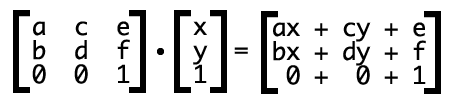

之前一直把转换和过渡混在一起，以为两者有关系，其实只是名字像而已 使用transform属性进行转换， 可以使用的转换有4种： 平移： translate() 旋转： rotate() 缩放： scale() 倾斜坐标轴： skew() matrix(a, b, c, d, e, f) 实际上，上面四个都是用矩阵变换做的。 转换之后，还是在正常的文档流之中。 由于没有脱离文档流，所以不会发生reflow，只发生重绘， 因此，如果要改变元素位置，transform的平移可能会比left, top性能更好。